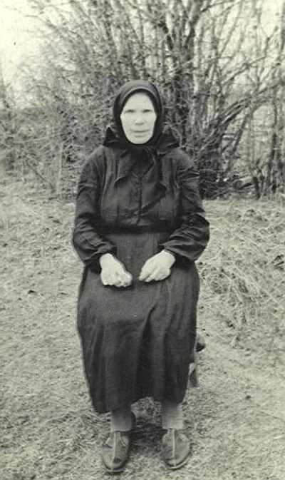
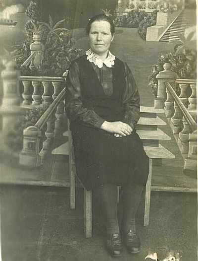

Бахорина (Борейко) Марфа ФедоровнаРодилась в 1901г. в д.Горушка, Себежского р-на, Псковской обл., Россия. Вместе с сыном Иваном переехали в г.Щучин, Гродненской обл., Беларусь. |

1957г.  сверху: сын Иван, Сакель Ян, сын Александр, слева - невестка Бахорина (Сакель) Ядвига, справа - Сакель Юзя, на руках - внук Павел  сестра Ефроснья Федоровна |
|
Родители:
Братья/Сестры:
Дети:
|